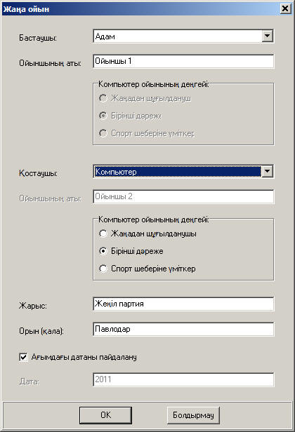

Авторами компьютерной программы "Тогызкумалак" являются Ернар Шамбаев (разработчик информационно-поисковой системы "Кеден"), Серик Актаев (мастер спорта международного класса по тогызкумалаку, чемпион Казахстана 2004 года) и Диана Кениной (мастер спорта международного класса по тогызкумалаку, чемпионка Азии). Программа зарегистрирована в Комитете по правам интеллектуальной собственности Министерства юстиции Республики Казахстан (свидетельство о государственной регистрации прав на объект авторского права №1718 от 17 ноября 2010 года).
Главное окно программы (щелкните по ссылке для просмотра).
Программа позволяет играть в национальную игру тогызкумалак в режиме "человек-человек" и "человек-компьютер". Пользователь может выбрать уровень игры компьютера (Начинающий, Перворазрядник, Кандидат в мастера спорта):

Программа "Тогызкумалак" поддерживает многоязычный интерфейс (казахский, русский, английский) и работает под управлением операционной системы Windows 95/98/NT/XP/2000/Vista/7. Дизайн доски разработан Валерией Приваловой.